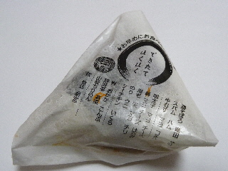
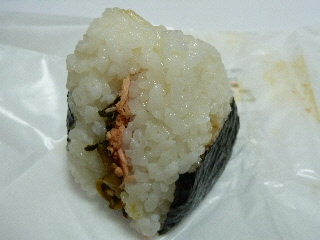

おむすび三休の高菜鮭
2014/05/07
島大の近くのおむすび屋さんで買い物をしました。

おむすびのパッケージにメニューが書いてありますね。
これは、メニューにオレンジ色の印が付いてる高菜+鮭です。

具は、おむすびにサンドしてあるタイプです。
サンドだと、具が全面にあっていいですね。
これは高菜のピリ辛味と鮭味の両方が味わえ、濃い味で美味しかったです。
おにぎりは塩分が効いてるほうが美味しくていいですよね。
島根県松江市学園2丁目26-6
2014/05/07
島大の近くのおむすび屋さんで買い物をしました。

おむすびのパッケージにメニューが書いてありますね。
これは、メニューにオレンジ色の印が付いてる高菜+鮭です。

具は、おむすびにサンドしてあるタイプです。
サンドだと、具が全面にあっていいですね。
これは高菜のピリ辛味と鮭味の両方が味わえ、濃い味で美味しかったです。
おにぎりは塩分が効いてるほうが美味しくていいですよね。
近くのパン屋さん
近くの洋菓子屋さん